Bir varmış, bir yokmuş, memleketin birinde bir padişah varmış, bu padişahın da altı-yedi yaşlarında bir kızı. Padişahın kızının pek çok hizmetçisi ve uşağı varmış. Bu uşaklardan biri de prensesten yaşça biraz daha büyük olan Koç Ali imiş. Yemek yerken prensesin peçetesi yere düşecek olsa Koç Ali eğilip onu alır, prensese verirmiş. Oyun oynarken prensesin topu biraz uzağa kaçacak olsa Koç Ali koşup getirirmiş onu. Bazen prenses binlerce oyuncağından bıkar, çelik-çomak oynamak istermiş. Oyundaki sopaları ise altın ve gümüştenmiş.
Prensesin çelik-çomak oynayacağım di-ye tutturduğu ilk gün, padişah şehirdeki bütün altın ve gümüş ustalarını çağırtmış ve kızına bir çelik-çomak yapılmasını emretmiş, hem de bir saat içinde. Tam yüz bin liraya mal olmuş bu çelik çomak oyunu. Çelik-çomak yapsınlar diye saraya çağrılan kuyumculardan birinin sonu ölüm olmuş, çünkü adam o sırada elinde önemli bir iş olduğunu söyleyip saraya gitmek istememiş. Önemli işi de şuymuş: Yeni doğan kızına küpe hazırlıyormuş.
Prenses ne zaman çelik-çomak oynamak istese Koç Ali onun yanında durup beklermiş. Prenses gümüşten yapılma kısa sopayı alır, altından olan uzun sopayla ona vurup havaya fırlatırmış. Sopanın peşinden koşmak Koç Ali’nin göreviymiş, onu yakalar, tekrar kıza atarmış. Kız da sopa havadayken ona vurur, yeniden havaya fırlatırmış. Koç Ali de gidip sopayı yakalar, yeniden kıza atarmış.
Kız oyun oynamaktan yorulunca Koç Ali bir koşu gidip hizmetçilerle uşaklara haber verirmiş. Onlar da hemen gelip prensesi özel bir koltuğa oturtur, saraya taşırlarmış. Sonra da Koç Ali değerli oyuncakları koruyan özel görevliyi çağırır, çelik-çomağı alıp öbür binlerce oyuncağın yanına koymasını söylermiş. Ondan sonra, giysileri koruyan özel görevliye gider, prensesin yemek yerken giyeceği özel giysiyi alırmış; prenses çelik-çomak oynarken giydiği kıyafeti çıkarıp bu temiz giysiyi giyermiş.
Bu iş de bitince Koç Ali prensesin özel mutfağına gider, onun çelik-çomak oyunundan sonra yiyeceği özel yemeği getirmelerini söylermiş. Prenses her oyundan sonra özel bir yemek yermiş çünkü.
Koç Ali hep bu tür tuhaf işler görürmüş. Prenses uyurken Koç Ali de onun kapısının önüne kıvrılıp yatar, böylece hizmetçiler ve uşaklar kızın uyumakta olduğunu bilirler, ne konuşur ne de bir şey sorarlarmış.
Prenses ne emir verirse versin Koç Ali seve seve yerine getirirmiş ve işini öyle iyi yaparmış ki prenses ona asla el kaldırmaz, asla azarlamazmış. Aslında Koç Ali prensesi seviyormuş. Saf ve temiz bir sevgiymiş bu. Koç Ali bunda bir yanlışlık olmadığına inanıyormuş. Bu düşünceyle bir gün kalbindeki sırrı prensese açıvermiş.
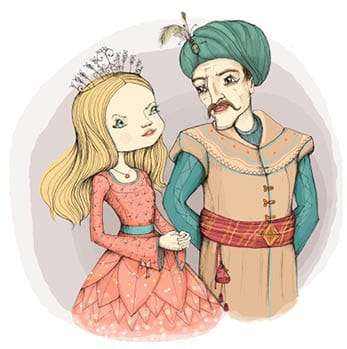
O gün prenses kendi bağında kelebek kovalıyormuş. Koç Ali bir ağacın altında durmuş kızı seyrediyormuş; ara sıra, kelebeğin biri uçup bir ağaca konduğunda, ağaca tırmanıp kelebeği yakalamak Koç Ali’nin göreviymiş. Bir ara prenses kocaman bir kelebek görmüş. Koç Ali’yi çağırıp, “Koç Ali, bu kelebeği sen yakala, ben korkuyorum,” demiş.
Koç Ali hemen koşmuş, kelebeği yakalamış ve tül kepçeye koymuş. Başını kaldırdığında prensesin tam karşısında durduğunu görmüş. Kendisini tutamayarak, “Prensesim, ben seni çok seviyorum. İkimiz de büyüdüğümüzde evlenelim, ne olur,” demiş.
Daha cümlesini bitiremeden prenses olanca gücüyle onun yanağına bir tokat patlatmış ve “Seni beş para etmez uşak, seni!” diye haykırmış. “Sen ne cesaretle seversin beni? Benim bir prenses, seninse uşağım olduğunu unuttun mu? Sen köpeğimin kapısında bile bekçi olamazsın! Seni serseri! Yıkıl karşımdan! Bir daha da gözüme görünme! Git hizmetçilerimi çağır da seni sokağa atsınlar. Senin o lanet yüzünü bir daha görmek istemiyorum!”
Koç Ali hizmetçileri çağırmak üzere ayrılmış oradan. Hizmetçiler koltukla birlikte kızın yanına döndüklerinde prensesin yerde baygın yattığını görmüşler. Herkes Koç Ali’nin çevresini sarmış, prensese ne yaptığını sormuş. Koç Ali ise, “Ben bir şey yapmadım. Öfkelendi, bana tokat attı, sonra da bayıldı. Yemin ederim,” demiş.
Ama ona kim inanır ki? Hizmetçiler prensese gülsuyu ve şerbet getirmişler, onu koltuğa koyup saraya taşımışlar. Prenses, “Babama söyleyin, bu nankör uşağı yakalatsın ve köpekler gibi sokağa attırsın. Onun lanet suratını bir daha görmek istemiyorum,” demiş.
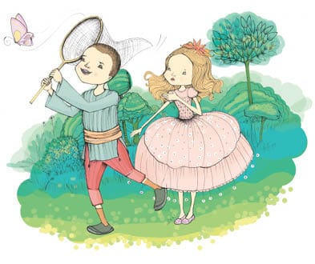
Olanları duyan padişah, Koç Ali’nin hemen köpek gibi sokağa atılmasını emretmiş. O günden sonra padişahın kızı günlerce hasta yatmış. Her gün birkaç tane hekim kızın başında nöbet tutuyormuş. Birkaç gün sonra prenses kendini daha iyi hissettiğini söyleyerek hekimleri göndermiş.
* * *
Aradan yıllar geçmiş ve padişahın kızı iyice bencil biri olup çıkmış. Hatta bu durum öyle kötüye gitmiş ki on yedi-on sekiz yaşlarına geldiğinde artık kendisine kimsenin bakmasına izin vermez olmuş, o güzel bedeninin kimsenin bakışlarıyla kirlenmesini istemiyormuş. Hizmetçilerden ya da uşaklardan biri yanlışlıkla ona bakacak olsa hemen kırbaçlanırmış, ağızlarından tek bir sözcük çıkarsa, prensesin kendi keyfi için bağda tuttuğu aç kurtların önüne atılırmış. Padişah ise kızının bu tavırlarını pek beğenir ve ona hep, “Kızım, tıpkı benim gibi davranıyorsun, bu da çok hoşuma gidiyor,” dermiş.
Padişahın kızı o kadar kibirli biri olmuş ki bağda dolaşırken hiç kimseyle tek sözcük konuşmuyormuş. Hiç kimse benimle konuşmaya layık değil, diyormuş.
Bağın ortasına prenses için iki tane büyük havuz yapılmış, birinin içi her zaman taze sütle, öbürünün içiyse gülsuyuyla, yasemin ve çaygülü parfümüyle doluymuş. Her gün iki genç hizmetçi belli bir saatte havuzların yanına gelip orada durur, prensesin süt dolu havuzdan çıkıp gülsuyu dolu havuza girmesini, sonra da bir havluya sarınmasını beklerlermiş. Hizmetçilerin onun bedenine dokunmalarına izin yokmuş. Prensesin saçlarına ya da tenine parmaklarının ucu bile değse hemen o gün çok ağır cezalandırılırlar, hatta elleri kesilirmiş.
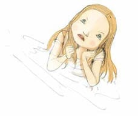
Padişahın kızı herkesi kendisinden o kadar uzaklaştırmış ki sonunda yapayalnız kalmış, zamanını nasıl geçireceğini bilemez olmuş. Kelebek yakalamaktan da, çiçek toplamaktan da, süt ve gülsuyu banyosu yapmaktan da, oyuncaklarıyla oynamaktan da, yemekten içmekten ve kurtlarını izlemekten de bıkmış. Düşünde hep Koç Ali’yi görüyormuş. Kendisiyle oynamak için geliyormuş Koç Ali. İlk başta çok seviniyormuş prenses. Ama sonra bir padişah kızı olduğunu, herkesten farklı olduğunu hatırlıyor, Koç Ali’yi kendisinden uzaklaştırıyormuş. Ama Koç Ali kızı bırakıp gitmiyormuş. Onun elini tutmak istiyormuş. Kız elini kurtarmak için mücadele ediyormuş Koç Ali ile. Ama sonunda, direnmekten vazgeçiyormuş, Koç Ali de onun elini tutuyormuş, birlikte oynamaya, sağa sola koşmaya, kelebek yakalamaya başlıyorlarmış. Tam oyunun ortasında Koç Ali, “Prenses, seni seviyorum. Büyüdüğümüz zaman ne olur evlen benimle,” diyormuş.
Prenses tam o anda padişahın kızı olduğunu hatırlıyor, Koç Ali’nin suratına bir tokat atıyor, çığlık çığlığa bağırmaya başlıyormuş. Sonra da Koç Ali’yi cellatlara veriyor, kendi çığlıklarının ve haykırışlarının sesinden uyanıp yerinden fırlıyormuş.
Hep aynı düşü görüyormuş prenses. Düşünde Koç Ali’den başka bir oyun arkadaşı göremiyormuş. Hatta Koç Ali hiç değişmemiş de güya hâlâ yıllar önce olduğu yaştaymış.
Padişahın kızıyla evlenmek isteyen birçok kişi varmış. Uzak ülkelerden gelen pek çok prens onun gönlünü kazanmaya çalışıyormuş ama prenses onlarla yüz yüze bile gelmeden görüşmeyi reddediyor, kendisinden başka kimseyi sevmediğini söylüyormuş.
* * *
Bir gün padişahın kızı havuzlardan birinde yıkanmaktayken bir güvercin gelmiş ve havuzun kenarındaki nar ağacına tünemiş. “Güzel kız,” demiş prensese, “ne kadar güzelsin! Sana âşık oldum. Süt havuzundan çık da seni daha iyi görebileyim.”
Padişahın kızı, “Seni pis kuş!” demiş güvercine. “Buradan gitmeni emrediyorum sana. Ben bir prensesim. Hiç kimse bana bakamaz ve hiç kimse benimle konuşmaya layık değildir.”
Güvercin gülmüş ve şöyle demiş: “Güzel kız, uzun zamandır konuşacak kimsen olmadığını biliyorum!”
Prenses, padişahın kızı olduğunu bir an unutup yumuşamış, “Tatlı dilli güvercin, bakma bana ne olur. Rahatsız oluyorum,” demiş.
Güvercin de, “Güzel kız,” demiş, “elimde değil. Seni seviyorum.”
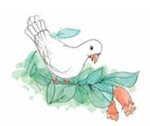
Prenses, “Tatlı dilli güvercin, bir güvercinin aşkını kabul edemem ki,” demiş. “Eğer beni gerçekten seviyorsan gizlendiğin kılıktan çık ki ben de seni görebileyim.”
Güvercin, “Güzel kız, benim aşkımı kabul edeceğinden pek emin değilim,” demiş. “Emin olmam için bana bir güvence ver, o zaman kılığımdan çıkarım, beni görürsün.”
Prenses de, “Tatlı dilli güvercin, dile benden ne dilersen,” demiş.
“Güzel kız, uykunu isterim,” demiş güvercin.
“Uykumu neden istiyorsun, tatlı dilli güvercin?” diye sormuş prenses.
“Güzel kız,” demiş güvercin, “uykunu neden istediğimi yakında anlayacaksın.”
“Peki,” demiş prenses de, “uykum senin olsun.”
Tam o sırada, ellerinde havlularla, başlarını kaldırmadan havuza yaklaşmakta olan hizmetçilerin ayak seslerini duymuşlar. Güvercin, “Güzel kız,” demiş, “senin uykun benim oldu. Şimdi gidiyorum. Ama döneceğim. Sana Hanım Kız adını taktım. Senin gibi güzel bir kızın adının olmaması hiç doğru değil.”
Prenses birden padişahın kızı olduğunu hatırlamış, “Seni iğrenç kuş!” diye haykırmış, “ne cesaretle konuşursun benimle? Uykumu geri ver bana, yoksa seni mahvederim. O pis ağzınla bana ad takmaya nasıl cüret edersin sen?”
Ama güvercin çoktan uçup gitmiş nar ağacından, padişahın kızı öfkeden köpürerek cellatları çağırmış, oysa yapılacak bir şey yokmuş.
* * *
Aradan haftalar geçmiş ama padişahın kızının gözüne bir dakika bile uyku girmemiş. Uyumak onun için bir hayal olmuş. İlk başta bu uykusuzluk onu çılgına çevirmiş. Azgın bir köpek gibi odada dolanıp durur, duvarları tırmalar ve herkese lanetler okurmuş; yanına kimseyi yaklaştırmazmış, hatta babasını ve hekimleri bile. Günler, geceler boyu yalnızlığı gitgide büyümüş. Sonunda, yorgunluktan iyice bitkin düşmüş. Ama o zaman bile uyuyamamış. Hiç konuşamıyormuş, hatta parmağını bile kıpırdatamıyormuş. Hekimlerin, yatağının yanına ancak birer birer gelmelerine izin veriyormuş. Hiçbir hekim iyileştirememiş onu. Padişah, kızının bedenine hiç kimsenin dokunmaması için emir vermişmiş. İşte bu yüzden prensesi neyin iyileştireceğini bulamıyormuş hekimler. Günün birinde yaşlı, tuhaf bir hekim çıkagelmiş, “Ben prensesin hastalığına çare bulabilir ve elimi değdirmeden iyileştirebilirim onu. Eğer iyileştiremezsem başımı vurabilirsiniz,” demiş.
Padişah, hekimin prensesin yanına götürülmesini emretmiş. Yaşlı hekim kızın başucuna oturmuş, ona uzun uzun bakmış ve sonunda şöyle demiş: “Onun hastalığının çaresi, Sevgi Masalı’dır. Biri gelip ona Sevgi Masalı’nı anlatmalı ki prenses uykusuzluk hastalığından kurtulsun.”
Padişah, çığırtkanların şehrin dört bir yanına dağılarak halkın arasında Sevgi Masalı’nı anlatabilecek kişiler varsa saraya çağırmalarını emretmiş, eğer gelip kızına o masalı anlatabilecek biri çıkarsa karşılığında o kişiye ne dilerse dilesin verecekmiş padişah.
Sevgi Masalı’nı bildiklerini söyleyerek gelen pek çok kişi zengin olmayı hayal ediyormuş. Prensesin odasına gelirler, perdenin arkasında durup bir sürü yalan sıralarlarmış, bu yalanların padişahın kızına hiçbir yararı dokunmayınca padişah o kişileri cellatlara teslim edermiş. Artık hiç kimse cesaret edip masal anlatmaya gönüllü olmuyormuş.
Aradan birkaç gün geçmiş. O garip yaşlı hekim tekrar ortaya çıkmış, padişaha, “Ne biçim bir şehir burası, hiç kimse Sevgi Masalı’nı bilmiyor,” demiş. “Filanca dağda Sevgi Masalı’nı bilen genç bir çoban yaşar. Gidin de onu şehre getirin. Ama padişah hazretleri, eğer siz onu kendiniz gidip getirmezseniz asla dağdan inmez.” Bunları söyler söylemez de çekilip gitmiş hekim. Padişah yanına birkaç adamını almış, atlarına atlayıp yola koyulmuşlar. Uzunca bir süre at sırtında gittikten sonra dağın eteğine varmışlar. Padişah genç çobana seslenmiş. Çoban da dağın tepesinden bağırmış: “Kimsiniz? Benden ne istiyorsunuz?”
“Ben padişahım,” demiş padişah. “Kızı-mın hastalandığını duymadın mı? Senin gelip...”
Padişah, hekimin söylediklerini unutmuş. Çoban da hatırlatmış: “Sevgi Masalı’nı mı istiyorsunuz?” diye sormuş.
Padişah, “Evet,” demiş. “O dediğini istiyorum. Yaşlı ve tuhaf bir hekim senin o masalı bildiğini söyledi.”
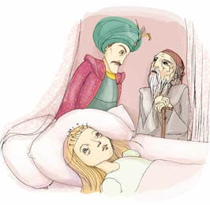
“Evet, biliyorum,” demiş çoban.
“Eğer kızımı iyileştirebilirsen,” demiş padişah da, “dilediğin kadar altın ve gümüş...”
Dağdan aşağı inmekte olan çoban, “Padişahım, eğer dünya malından söz edecekseniz ben yanınıza gelmem. Sevgi Masalı ancak sevgi için anlatılır,” demiş.
Padişah başka bir şey söylememiş. İçinden bu küstah çobanı cellatlara teslim etmek geliyormuş ama hiçbir şey dememiş. Çoban padişahın atının arkasına atlamış ve birlikte saraya dönmüşler. Oraya vardıklarında çobanı bir perdenin arkasına oturtmuşlar, ona, “Padişahın kızına hiçbir yabancı göz değmemeli,” demişler. Çoban da şöyle yanıt vermiş: “Sevgi Masalı herkesin duyacağı bir şey değildir. Eğer bu sarayda prensesle benden başka bir kimse bulunursa masal etkisiz kalır. Herkes dışarı çıkmalı.”
Padişah çaresiz kalmış. Herkese sarayı boşaltmalarını buyurmuş. Sarayda yalnızca çobanla prenses kalmış. O zaman çoban perdeyi kenara itip odaya girmiş. Genç kız yatağında kımıldamadan yatıyor, çevresinde neler olup bittiğine dikkat etmiyormuş. Çoban kapının yanında yere oturmuş ve yüksek sesle, “Güzel kız, Hanım Kız, sana Sevgi Masalı’nı anlatacağım. Dinlemek istiyor musun?” demiş.
Sanki tanıdık bir ses duymuş gibi başını çevirmiş prenses, genç çobana bakmış ve, “Evet, dinleyeceğim, anlatsana,” demiş.
Çoban, Sevgi Masalı’nı anlatmaya başlamış.
“Bir varmış bir yokmuş, memleketin birinde bir padişah, padişahın da altı-yedi yaşlarında bir kızı varmış. Bu kızın pek çok hizmetçisi ve uşağı varmış. Bir de özel uşağı varmış, prensesten yaşça biraz büyük olan bu çocuğun adı Koç Ali imiş. Yemek yerken prensesin peçetesi yere düşecek olsa Koç Ali kaldırıp verirmiş onu. Oyun oynarken prensesin topu biraz uzağa kaçacak olsa Koç Ali koşup getirirmiş. Ve bazen padişahın kızı binlerce oyuncağından bıkar, çelik-çomak oynamak istermiş. Onun oynadığı çelik-çomak altın ve gümüştenmiş. Prenses uyurken Koç Ali de onun kapısının önünde uyurmuş, böylece uşaklar ve hizmetçiler ve saraydaki diğer hizmetliler kızın uyumakta olduğunu bilir, ne bir şey sorar ne de konuşurlarmış. Prenses ne emir verirse versin Koç Ali yerine getirir ve işini öyle iyi yaparmış ki prenses asla cezalandırmaz, asla azarlamazmış onu. Koç Ali prensesi seviyormuş. Saf bir aşkla, temiz kalple seviyormuş. Bunda da bir yanlışlık olmadığını düşünüyormuş. Neden sorun olsun, diyormuş, sevmenin neresi kötü? Birlikte bağa gittiklerinde, prenses kelebek kovalarken ya da çelik-çomak oynarken Koç Ali kendisini son derece mutlu ve tasasız hissedermiş. Bıkmadan seyredermiş genç kızı. Keşke elini tutmama izin verse de birlikte dolaşıp kelebek yakalasak, diye düşünürmüş. Oysa prenses hiç kimseden hoşlanmazmış, yanına kimse yaklaşmasın diye hizmetçileri, uşakları, köpekleri çağırırmış. Koç Ali çok tasasız ve çok mutluymuş ama sonunda yüreğindeki sırrı prensese açması gerektiğini anlamış. Böylece bir gün, kelebek kovalarlarken prensese, ‘Prensesim, ben seni seviyorum. Büyüdüğümüzde benimle evlenmeni istiyorum,’ demiş.
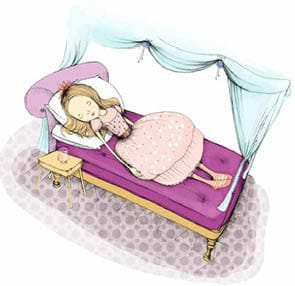
Prenses bu söze o kadar sinirlenmiş, o kadar sinirlenmiş ki Koç Ali’ye bir tokat patlatmış, köpek kovalar gibi kovalamış yanından. Saraydan attırmış onu ve sonra başına ne geldiğiyle de hiç ilgilenmemiş.”
Çoban susmuş. Prenses, “Anlat bana çoban, sonra ne olmuş?” demiş.
Çoban, “Güzel kız, sence Koç Ali’nin başına ne gelmiştir?” diye sormuş.
Prenses, “Koç Ali’nin başına ne geldiğini hiç düşünmedim,” demiş. “Sen biliyor musun neler olduğunu? Yaklaş yanıma. Yaklaş da anlat bana.”
Çoban ayağa kalkıp kızın yatağına yaklaşmış, elini eline alıp Sevgi Masalı’nı anlatmaya devam etmiş...
“Koç Ali’nin babası çobanmış. Koç Ali yürüyerek otlağa gitmiş ve babasını dağın tepesinde bulmuş. Babası çok hastaymış ve koyunların uyuduğu mağarada uyuyormuş. Koç Ali’nin kız kardeşi koyunları otlamaya götürmüşmüş. Oğlunu gören babası çok sevinmiş ve, ‘Koç Ali, tam zamanında geldin,’ demiş. ‘Ben ölüyorum. Kız kardeşini yalnız bırakma. Yalnızlık büyük acı verir insana.’
Babası ölmüş. Oğlu da ona o dağın tepesinde bir mezar yapmış. Akşam olup da kız kardeşi dönünce mağarada babasının yerine erkek kardeşini bulmuş. İkisi de babaları için gözyaşı dökmüşler, mezarının üzerine çiçekler, ağaçlar dikmişler.
Aradan günler, haftalar, yıllar geçmiş, Koç Ali ile kız kardeşi on yedi, on sekiz yaşına gelmişler. İkisi birlikte çayırlarda, dağlarda dolaşıyor, koyunları otlatabilecekleri en iyi otlakları arıyorlarmış. Geceleri de mağarada, yanlarında köpekleriyle uyuyorlarmış. Kış aylarında, koyunları kışı geçirecekleri mağaraya koyduktan sonra, çobanlara pek iş düşmediği günlerde ara sıra şehre iniyorlarmış.
Koç Ali’nin kız kardeşi bahar havası gibi tatlı, yaz güneşi gibi ışıltılı, sonbahar meyveleri gibi mis kokulu ve alımlı, kış geceleri gökteki ay gibi berrak ve sevimliymiş, aynı zamanda kırlarda açan laleler gibi de vahşiymiş, yanakları pembe pembeymiş. Bu nedenle Koç Ali ona Lale adını takmış.
Bir gün, sürüyü geri getirirlerken Koç Ali keçilerden birinin eksik olduğunu fark etmiş. Köpeklerden birini yanına alıp keçiyi aramaya gitmiş. Dağ bayır dolaşmış, sonunda bir derenin kıyısına varınca keçiyi görmüş. Keçi derenin kenarına oturmuş ağlıyor, söğüt ağacı gibi iki yana sallanıyormuş. Köpek keçiyi görür görmez, ‘Bekle, geliyoruz!’ diye havlamış.
Keçi çok sevinmiş. ‘Gelip beni bulamazsınız, ben de kurtlara yem olurum diye çok korkuyordum. Sağ olun,’ demiş.
Hava kararmaktaymış. Koç Ali başını kaldırıp bakınca dağın öteki yüzünden doğru yedi beyaz atın dörtnala gelmekte olduklarını görmüş. Keçiyi köpeğe emanet edip mağaraya yollamış, kendisi de bir kayanın arkasına oturup beklemiş. Atlar dereye varmışlar. Her birinin sırtında birer deri su kabı varmış. Atlar su kaplarını doldurmuşlar, tam geri döneceklermiş ki içlerinden biri, “Ben artık o şatoda tek başıma yaşamak istemiyorum,” demiş. “Ya şimdi burada ölürüm ya da kendi şehrimize giderim. Ama sizler kuzinlerimizin yanına dönmelisiniz.”
Öbür atlar onu yatıştırmışlar ve sonra hep birlikte geri dönmüşler. Koç Ali de oturduğu yerden kalkıp atların peşinden gitmiş. Atlar dörtnala gitmişler, dağları tepeleri geçmişler, sonunda ıssız bir ormana varmışlar, orada ne kuş, ne sürüngen, ne böcek ne de başka bir hayvan varmış. Yedi tane harika güzellikte şato görülüyormuş. Atların her biri kendi şatosuna girmiş. Koç Ali gökten altı beyaz güvercinin geldiğini ve birer birer şatolara girdiklerini görmüş. Bir kenarda beklemeye başlamış.
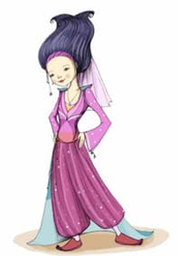
Sonra bir ağlama sesi duymuş. Şatoların içlerine göz atmaya başlamış. Her şatonun içinde ay gibi güzel bir kızla güneş kadar parlak bir delikanlının oturmuş, konuşup gülmekte olduklarını görmüş. Ama yedinci şatoda yine güneş kadar parlak bir delikanlı tek başına oturmuş, elindeki tebeşirle bir lale resmi çizmekte ve hıçkıra hıçkıra ağlamaktaymış. Öyle ki gözyaşları taş kalpli birinin bile içini sızlatırmış. Koç Ali şatoya girmiş, delikanlının yanına gidip, ‘Ağlama, delikanlı,’ demiş. ‘Bu gözyaşların yüreğimi parçalıyor.’
Delikanlı başını kaldırmış, ‘Sen de kimsin?’ diye sormuş. ‘Nereden çıktın?’
‘Ben dağdaki çobanım,’ demiş Koç Ali. ‘Senin ağladığını duyunca geldim buraya.’
Delikanlı, ‘Ben bu sabah seni dağın tepesinde görmüştüm. İyi ki geldin buraya. Gel yanıma otur. Yalnızlıktan perişan oldum,’ demiş.
Koç Ali delikanlının yanına oturmuş. ‘Neden öyle ağlıyordun?’ diye sormuş.
‘Uzun bir hikâye bu. Ama eğer dinlemek istiyorsan anlatırım sana,’ demiş delikanlı. Sonra da hikâyesini anlatmaya başlamış.
‘Biz yedi kardeşiz,’ demiş. ‘Bu ormana geleli daha iki gün oldu. Yaşadığımız şehirde demirciydik biz. Yaşlı babamız şehirde en iyi kılıçları yapardı. Gündüzleri demir döver, geceleri de gizlice kılıç yapardık. Padişah silah yapımını yasaklamıştı çünkü. Ama insanlar kılıca gereksinim duyduklarından biz de zorunlu olarak geceleri çalışırdık. Dükkânımızdaki örs, normal bir örsün yirmi katı büyüklüğündeydi. Sekizimiz birden örsün başına geçer, demir döverdik. Günün birinde babamız bizi karşısına alıp şunları söyledi: ‘Evlatlarım, ben yakında öleceğim, ama sizi uzun bir hayat bekliyor, hepinizin bir arkadaşı, bir eşi olması gerek. Artık evlenmenizin zamanı geldi. Ama öyle eşleriniz olmalı ki kolları sıvayıp tıpkı sizin gibi demiri çekiçlemeli, kılıç yapabilmeli. Kuzinleriniz size uygun birer eş olabilir. Ama sizlerin becerikli olup olmadığınızı kanıtlamanız için merhum amcanızla ben hepinizi sınamak istedik. Kuzinlerinizi nasıl bulacağınızı gösteren talimatı bu örsün ortasına gömdük. Öyle keskin bir kılıç yapmalısınız ki bu örsü ikiye bölebilmeli ve siz de kuzinlerinizi nasıl bulacağınızı anlatan talimatımızı bulabilmelisiniz.’
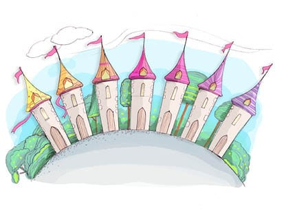
Babamız birkaç gün sonra öldü. Biz yedi kardeş de işe giriştik. Zamanımızın çoğunu yeraltında, demir-çeliğin, çekiçlerin filan başında geçiriyorduk. Ama hangi kılıcı yaparsak yapalım örste bir çentik bile açamıyordu. Açmak bir yana kendisi ikiye bölünüyordu. Sonunda, karanlık ve soğuk bir kış gecesi, örsü ikiye bölebilecek bir kılıç hazırlayabildik. Örsün tam ortasında, küçük bir kutu duruyordu. Kutunun içinde de küçük bir kâğıt vardı. Üzerinde şunlar yazılıydı: ‘Kılıç ustası kuzenler, kılıç yapan elleriniz yorulmasın. Gelip bizi bulun. Sizi özledik. Çöle ağaçlar diktik. Bizi nasıl bulacağınızı ilkbaharda açacak ilk kırmızı laleye sorun. İmza: Kuzinleriniz.’ Bu not bizi tahmin edemeyeceğin kadar huzursuz etti. Hemen o gece gidip kuzinlerimizi bulmak istiyorduk. Ama ne yolu biliyorduk ne de işimizi öylece bırakıp yola çıkacak durumdaydık. Aynı gün şehirdeki savaşçılar tam bin tane çelik kılıç ısmarlamışlardı, onları kış bittiğinde teslim etmek zorundaydık. Gel gör ki o yıl kış uzun sürdü, bahar geç geldi; biz de gün geçtikçe iyice sabırsızlanıyorduk. Kar mevsimi sona ermişti ki bir tepenin üstünde kocaman, kırmızı bir lale gördük, ortasında iri, siyah bir benek vardı. Laleye, ‘Güzel Lale, kuzinlerimiz nerede, bize yol göster,’ dedim.
Lale doğruldu, ‘Bana bir öpücük ver kuzen, bir öpücük ver ki sana diyeceklerimi diyeyim,’ dedi.
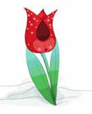
Eğilip bir öpücük verdim laleye. O zaman bana şöyle dedi: ‘Bu yıl kış çetin geçti, bahar da geç geldi. Kuzinleriniz kaygılanıyor, huzursuzlar. Öyle sabırsızlar ki, eğer onları bir an önce bulmazsanız yaşamak istemiyorlar. Ben sizlere nasıl birer güvercin ya da at olacağınızı öğreteceğim ki onları hiç gecikmeden bulun.’
Bu sözlerden sonra lale bize bazen güvercine, bazen de ata nasıl dönüşeceğimizi öğretti, kuzinlerimizi nasıl bulabileceğimizi de anlattı. Sonunda bana dönüp, ‘Kuzenim, beni seçmeni ve beni alıp götürmeni çok isterdim,’ dedi. ‘Ama uzun geçen kış bütün lale soğanlarını öldürdü, eğer ben burada kalmazsam bu tepeleri hiç kimse kırmızıya boyayamaz. Beni koparma ki ben her yere tohumlarımı serpip kırmızıya boyayabileyim.’
Lalenin yanından ayrıldık. Kılıçları savaşçılara teslim ettik, güvercin kılığına girdik ve yola koyulduk. Uçmaktan yorulduğumuzda at kılığına giriyorduk. Denizi aştık, dağlardan geçtik. Sonunda, dün öğleden sonra bu sakin ve ıssız ormana ulaştık. İçleri döşenmiş şatoları gördük. Oturup bekledik. O gece, ormanın altı ayrı köşesinden altı beyaz güvercin uçup geldi. Bizi gördüklerinde çok sevindiler. Yere indiler, güvercin kılıklarından sıyrıldılar ve ayışığı kadar güzel altı kıza dönüştüler. ‘Hoş geldiniz, kuzenlerimiz,’ diye bizi selamladılar. Sonra bana bakıp, ‘En küçük kuzenimiz, seni de görmekten çok mutlu olduk,’ dediler. ‘Küçük kız kardeşimiz Lale, senin sabırlı olmanı söyledi. Bu yıl kış uzun ve sert geçti, bütün laleleri kuruttu. Lale yardım etmeseydi biz hiçbirinizi bulamazdık. Bizi bulmanıza yardımcı olacak lale soğanı kalmamıştı, Lale toprağa kendi kanını dökmeseydi, bütün dünya laleleri unuturdu, insanlar bir daha hiçbir lale göremezlerdi,’ dedi.
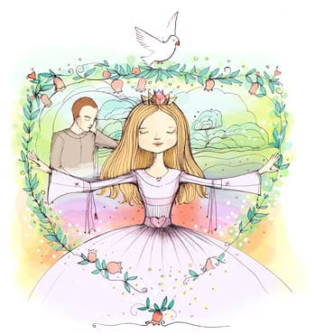
Onların bu sözlerini duyunca neredeyse aklımı kaçırıyordum. ‘Tepenin üzerindeki kırmızı lalenin benim Lale’m olduğunu mu söylüyorsunuz?” diye haykırdım.
Kız kardeşler, ‘Evet’ dediler. ‘Tepenin üzerindeki kırmızı lale bizim kız kardeşimizdi, çayırların ve otlakların lalesiz kaldığının sanılmasını istemiyordu. Dağları, tepeleri kırmızıya boyamak, onları görkemli bir görünüme kavuşturmak istiyordu. Çok büyük bir sevgiydi onunkisi. Kendini bizim uğrumuza ve dünyanın uğruna feda etti o.”
Birkaç dakika boyunca geri dönüp laleyi koparmayı düşündüm. Ama öyle büyük bir özveride bulunmuştu ki, sesimi çıkaramadım. Kuzinler beni alıp Lale’nin şatosuna götürdüler, şato sessiz ve ıssızdı. O geceyi hep birlikte Lale’nin şatosunda geçirdik. Orada kuzinlerim bana, Lale’nin beni çok sevdiğini söylediler. Çok çalıştığını, dağın tepesindeki pınardan ormandaki ağaçlara su taşıdığını anlattılar. Kuzinlerim ayrıca bir süredir padişahın av sahasındaki hayvanları bu ormana göç etmeleri için ikna etmeye çalıştıklarını da söylediler.
Düğün gününde bütün hayvanlar ormana gelirler. Ama abilerim ve kuzinlerim düğün gününü benim yüzümden hep erteliyorlar, şehre dönmeme de izin vermiyorlar. Bu gece öyle üzüntülüydüm ki ağlamaya başladım. İçim ferahlasın istedim. İyi ki dinledin beni, çok teşekkür ederim.’
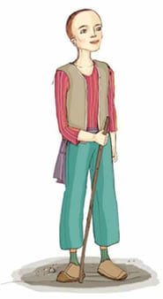
Delikanlı hikâyesini bitirince Koç Ali, ‘Ağlamakta haklısın. Ben de bir zamanlar padişahın kızını sevmiştim. Ama o beni sarayından attırdı, ben de bir daha onu arayıp sormadım,’ demiş.
Delikanlı, ‘Neden?’ diye sormuş. ‘Artık onu sevmiyor musun?’
‘Hayır,’ demiş Koç Ali. ‘Onu yeniden görecek olsam yeniden âşık olurum. Öyle güzel ki, bir eşi daha yok. Ama çok kaba ve bencil biri o. Senin Lale’nin saçının bir telini padişahın kızı gibilerinin saçlarının binlerce teline değişmem.’
Delikanlı, ‘Koç Ali, sen yalnız mı yaşıyorsun?’ diye sormuş.
Koç Ali, ‘Hayır,’ demiş. ‘Kız kardeşim Lale ile yaşıyorum.’
‘Lale mi?’ demiş delikanlı. ‘Seninle birlikte koyun güden kız mı o?’
‘Evet,’ demiş Koç Ali, ‘o pembe yanaklı, vahşi kız benim kız kardeşim.’
Delikanlı ayağa kalkmış, ‘Koç Ali, sana bir şey söylemek istiyorum, ama seni kırmaktan korkuyorum,’ demiş.
Koç Ali de, ‘Kız kardeşimi beğendiğini biliyorum,’ demiş. ‘Gel, gidelim. Eğer o da seni beğeniyorsa ve kabul ederse onu alıp buraya getir. Ben koyunları tek başıma güdebilirim.’
Bunun üzerine delikanlı Koç Ali’ye bir güvercin ya da bir at kılığına nasıl girebileceğini öğretmiş.
* * *
Mağarada Lale tekelerin tüylerini teker teker tarıyormuş. Yalnız kaldığında ve uyuyamadığında hep böyle yaparmış. Keçiler sıraya dizilip oturmuşlar, Lale’nin anlattığı hikâyeleri dinliyorlarmış. Koyunlar da dinliyorlarmış onu ama aralarından bazıları uyuyor, bazıları da sessizce ağızlarındaki lokmaları çiğniyorlarmış. Köpekler mağaranın girişinde kıvrılmış uyukluyorlarmış. Gece yarısıymış, ay tepeden sarkmış, ışıklarını mağaraya salmış, içeridekileri gözler gibiymiş.
Bir süre sonra ay, Lale’ye şöyle demiş: ‘Ayağa kalk, tatlım, ve ateş yak. Ben daha fazla kalamayacağım burada, gitmem gerek.’
Lale kalkmış, mağaranın girişinde bir ateş yakmış. Ay da usulca mağaranın tepesinden süzülerek oradan ayrılmış. Lale anlattığı hikâyeyi henüz bitirmiş ki, iki güvercin uçmuş mağaranın içine. Biri bembeyazmış, öteki de beyazmış ama göğsünde iri bir benek varmış. Lale, ‘Zavallıcıklar, yolunuzu mu kaybettiniz?’ diye sormuş. ‘Haydi gelin yanıma.’
Bembeyaz güvercin, cesaretlendirmek istercesine benekli güvercine bakmış, ‘Haydi! Git onun yanına. Korkma!’ der gibiymiş. Benekli güvercin gelip Lale’nin eline oturmuş. Lale ona bakmış ve eğilip öpmüş. Öteki güvercin de gelip Lale’nin kucağına oturmuş. Sonra Lale ikisini de usulca yere bırakmış ve ‘Burada bekleyin, size biraz arpa getireyim,’ demiş.
Sonra mağaranın arka tarafına geçmiş. Daha ufak bir mağaranın girişini kapatan bir kayayı kenara itmiş. Lale küçük mağaraya girdiğinde güvercinler kılıklarından sıyrılmışlar. Koç Ali’yi gören köpekler gelip önüne oturmuşlar. Avuçlarına arpa dolduran Lale geri döndüğünde karşısında abisini bulmuş, yanında da yakışıklı, uzun boylu bir delikanlı varmış. Güvercinlerse ortalıkta görünmüyorlarmış. Lale, ‘Koç Ali, neredeydin sen? Çok geciktin!’ demiş.
Koç Ali ise, ‘Gel, seni yeni arkadaşımla tanıştırayım,’ diye yanıtlamış kardeşini. ‘Sonra da anlatırım neden geciktiğimi. Bu arkadaşım seninle tanışmak için geldi buraya.’
Lale önce sessiz kalmış, sonra da, ‘Güver-cinlerimin nereye gittiklerini gördün mü?’ diye sormuş.
Koç Ali, ‘Biz geldiğimizde uçup gittiler,’ demiş. ‘Gidip bulayım onları. Siz ikiniz burada oturup sohbet edin.’
Sonra da mağaradan çıkmış Koç Ali, otlaklara bakan bir kayanın üzerine oturmuş. Biraz sonra Lale ile delikanlı elele mağaradan çıkmışlar. Koç Ali onları görünce, ‘Kutlarım sizi!’ demiş.
Delikanlı, ‘Arkadaşım, eğer bir itirazın yoksa Lale’yi de yanıma alıp hemen ormana dönmek istiyorum, kardeşlerimle kuzinlerim beni merak etmesinler,’ demiş.
Koç Ali Lale’ye gülümsemiş. ‘Lale, sen buradan gitmeden önce güvercinleri bulmamı istemiyor musun?’ diye sormuş.
Lale de ona gülümsemiş. ‘Kes şunu Koç Ali,’ demiş. ‘Beni kandırdınız siz ikiniz. Bu gece bir güzel dalga geçtiniz benimle.’
Üç genç kahkahalarla gülmüşler. Delikanlı Koç Ali’ye, ‘Yarın öğleden sonra seni bekliyoruz,’ demiş. ‘Ormandaki düğünümüze mutlaka gel.’
Sonra da beyaz bir at kılığına girmiş, Lale atın sırtına atlamış, iki genç fırlayıp gitmişler. Sabahleyin horozlar ötene kadar Koç Ali oradaki kayanın üzerinde hiç uyumadan oturmuş.
Sonra kalkmış, sürüsünün yanına yatıp uyumuş.
* * *
Ertesi gece, ormanda gürültü patırtı varmış. Sayısız kuş, memeli hayvan ve sürüngen yeryüzünün ve gökyüzünün dört bir yanından gelmişler, ağaçlarda ve ağaçların altında, toprağın içinde kendilerine yuva yapmaya başlamışlar.
Yedi demirci ustası kardeş, yanlarında güzel gelinlerle bir masanın çevresine oturmuşlar, düğün yemeğini yiyorlarmış. Koç Ali de oradaymış. Gece yarısı olduğunda yeni evliler ormanı hayvanlara bırakıp şehre döneceklermiş. Koç Ali’nin de kendileriyle gelmesini istiyorlarmış ama onu razı edememişler. ‘Koyunlarımla keçilerimi bırakamam,’ diyormuş Koç Ali. ‘Onlara bakmam gerek.’
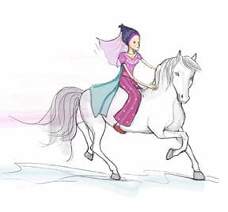
Gece yarısı olunca yeni evliler el ele tutuşmuşlar, güvercin kılığına girmişler ve uçup gitmişler. Koç Ali bir süre ormanda oturmuş, ama yalnızlığın verdiği üzüntüden bir türlü kurtulamıyormuş. Sonunda bir ağacın altına çökmüş ve bir süre ağlamış. Biraz rahatlayınca ayağa kalkıp mağaraya, sürüsünün yanına dönmüş.”
* * *
Genç çoban susmuş. Anlattığı masalın nasıl bir etki bıraktığını anlamak istercesine prensesin gözlerinin içine bakmış. Genç kız, titreyen bir sesle, “Biraz daha anlat,” demiş. “Koç Ali’nin başına neler geldiğini anlat bana.”
Genç çoban masalına devam etmiş:
“Düğün şenliğinin ertesi günü Koç Ali padişahın kızını yine hatırlamış, o zaman anlamış ki o kızı hâlâ seviyormuş. Kendi kendine, ‘Eğer o kızın aklını başına getiremezsem ve onun değişmesini sağlayamazsam bana da dağların çobanı demesinler,’ demiş. ‘Onun kötü davranışlarından vazgeçmesi için ne yapacağımı biliyorum. Yaşadığı hayattan kurtarmam gerek onu.’
Sonra güvercin kılığına bürünmüş ve prensesin bağına gitmiş. Genç kız süt havuzuna girene kadar beklemiş, sonra da gidip havuzun yanındaki bir nar ağacına çıkıp oturmuş. ‘Güzel kız,’ demiş, ‘ne kadar güzelsin! Seni çok seviyorum! Havuzdan çık da konuşalım!’ Genç kız önce kuduz bir köpek gibi sesler çıkarmış. Sövüp saymış. Emirler yağdırmış. Ama sonra padişahın kızı olduğunu unutup nazikleşmiş, iyi birine dönüşmüş, ‘Lütfen bakma bana,’ demiş çobana. ‘Biraz kibar ol.’
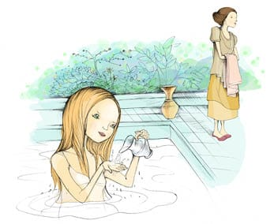
Koç Ali de, ‘Elimde değil, seni seviyorum,’ demiş.
Prenses, ‘Tatlı dilli güvercin, bir güvercinin sevgisini kabul edemem ki,’ demiş. ‘Eğer beni gerçekten seviyorsan, güvercin kılığından çık da seni görebileyim.’
Koç Ali kılığını değiştirmemiş. Bunun yerine prensesten uykusundan vazgeçmesini istemiş. Sonra da onun uykusunu almış, uçup gitmiş. O günden sonra genç kız bir saniye bile uyuyamamış. Uykusuzluktan hastalanmış, yatağa düşmüş. Şehirdeki bütün hekimler bir araya gelmişler, onun hastalığına çare bulamamışlar, çünkü padişah hiçbir hekimin kirli ellerini kızına sürmemesini emretmiş. Günün birinde Koç Ali yaşlı ve tuhaf bir hekim kılığına girmiş, padişaha gitmiş ve kızını elini değdirmeden iyileştirebileceğini söylemiş. Kızın durumunu incelermiş gibi bir süre kızı seyretmiş, sonra da kızın ancak Sevgi Masalı’nı dinlerse iyileşebileceğini söylemiş. Ama şehirde Sevgi Masalı’nı bilen yokmuş. Koç Ali yine yaşlı, tuhaf hekim kılığına girmiş, padişaha gidip filanca dağda Sevgi Masalı’nı bilen bir çoban yaşadığını, eğer padişah kendisi gidip onu çağırırsa, alıp kızının başucuna getirebileceğini söylemiş.”
* * *
Genç çoban yine susmuş ve kızın gözlerinin içine bakmış. Sonra gülümseyerek, “Evet, güzel kız, Hanım Kız,” demiş, “bir zamanlar beni köpek gibi evinden kovan senin baban kendisi kalkıp ayağıma geldi ve beni alıp senin yanına getirdi. Ne dersin buna?”
Hanım Kız elinde olmadan ağlamaya başlamış. “Koç Ali,” demiş, “padişahın kızı olduğumu tamamıyla unuttum gitti. Ben seninle olmak istiyorum. Senin sevgine ne kadar gereksinim duyduğumu ancak şimdi anlıyorum. Beni alıp götür. Ben de diğer insanlar gibi yaşamak istiyorum.”
Koç Ali, “Bu senin için hiç kolay olmayacak,” demiş. “Sen bolluk, zenginlik içinde büyüdün. Ama eğer gerçekten istiyorsan yeni hayatına alışabilirsin.”
Hanım Kız, “Seninle ve ötekilerle birlikte olursam kolayca alışırım yeni hayatıma,” demiş. “Koç Ali, ne olur seninle geleyim. Hanım Kız’ını burada yalnız başına bırakma.”
Koç Ali kızın gözyaşlarını silmiş, cebinden bir elma çıkarmış. “Şimdi yorgunsundur. Al bu elmayı ye, ben sonra seni almaya geleceğim. Beni ömür boyu seveceksin. Biliyorum bunu,” demiş.
Güzel kız elmayı yemiş, yatağına uzanmış, gözleri yavaşça kapanmış, tatlı, derin bir uykuya dalmış.
Koç Ali ayağa kalkmış, kızı yanağından öpmüş ve dışarı çıkmış. Padişahın yanına gidip, “Kızınızın uykusunu geri getirdim,” demiş. “Üç gün boyunca hiç kimse saraya girmesin ve prensesi uyurken rahatsız etmesin. Dördüncü gün gidip uyandırabilirsiniz onu.”
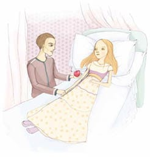
* * *
İkinci gün, güneş daha doğmadan Koç Ali bir güvercin olmuş, uçup Hanım Kız’ın yanına gitmiş, kılığından sıyrılmış, elindeki gülü kızın burnuna tutmuş. Kız gözlerini açmış, sessizce, tatlı tatlı gülmüş. Koç Ali, “İyi uyudun mu?” diye sormuş ona.
Hanım Kız, “Öyle güzel uyudum ki,” demiş, “bal gibi, şeker gibi tatlı bir uykuydu. Artık giderken beni de götürecek misin?”
Koç Ali, “Evet,” demiş. “Bağa gidip yıkan, sonra da buradan gidelim.”
* * *
Güneş doğarken, havuzun yanındaki nar ağacından iki beyaz güvercin havalanıp güneşe doğru uçmuşlar.
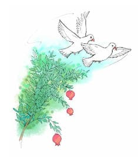